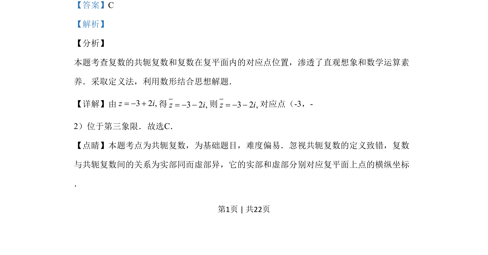

考点：共轭复数 复数的几何意义
本题考查复数的共轭复数概念及复数在复平面的对应点位置判断。

📄 原 PDF 第 1 页：
素材/真题/吉林/2008-2024·（吉林）数学高考真题/2019年高考数学试卷（理）（新课标Ⅱ）（解析卷）.pdf
2.设z=-3+2i，则在复平面内z对应的点位于 A. 第一象限 B. 第二象限 C. 第三象限 D. 第四象限
【答案】C 【解析】 【分析】 本题考查复数的共轭复数和复数在复平面内的对应点位置，渗透了直观想象和数学运算素 养．采取定义法，利用数形结合思想解题． 【详解】由32,zi=得32,zi=则32,zi=对应点（-3，- 2）位于第三象限．故选C． 【点睛】本题考点为共轭复数，为基础题目，难度偏易．忽视共轭复数的定义致错，复数 与共轭复数间的关系为实部同而虚部异，它的实部和虚部分别对应复平面上点的横纵坐标 ．